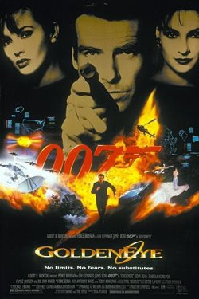
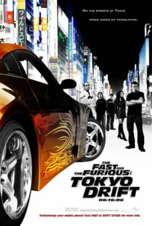
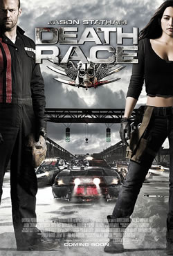
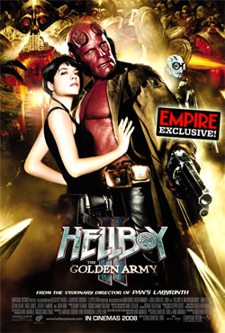
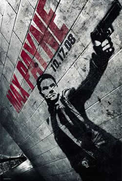

Ano: 1973
País: EUA
Ficha Técnica:
Ian Fleming (personagens)
Michael France
Jeffrey Caine
Bruce Feirstein
Elenco:
Pierce Brosnan
Sean Bean
Izabella Scorupco
Famke Janssen
|
Sinopse:
GoldenEye (007 Contra GoldenEye no Brasil e GoldenEye em Portugal) é
o décimo sétimo filme de James Bond no cinema, com Pierce
Brosnan pela primeira vez no papel de 007. A história do filme
tem oficiais dissidentes da KGB e do MI6 se apossam do poderoso satélite
GoldenEye, capaz de provocar pane em qualquer circuito eletrônico
no mundo, 007 é designado para detê-los a qualquer custo
e destruir a incrível arma. Para isto terá como aliada
Natalya Simonova, especialista em computação.
GoldenEye fora bem recebido pela crítica se tornou o filme mais
bem-sucedido da série até então, com US$350.7 milhões
mundialmente. |
|

Ano: 2006
País: EUA
Ficha Técnica:
Título Original: The Fast and the Furious 3 - Tokyo Drift
Gênero: Ação
Estúdio: Universal Pictures
Direção: Justin Lin
Roteiro: Chris Morgan
Produção: Chris Morgan
Elenco:
Lucas Black (Shaun Boswell), Bow Wow (Twinkie), Brian Tee (D.K., the
Drift King), Nikki Griffin, Nathalie Kelley, Sung Kang, Jason J. Tobin,
Henry Jaderlund (Jacob), Caroline de Souza Correa (Isabella), Masa
Kanome (Tea-Hair Gang), Trey Sanford (Bully), Jade Wu (Tea-Hair Gang),
April Betts (Cheerleader), Zachery Ty Bryan (Clay), Daniel Booko (Clay's
buddy), Brandon Brendel (Clay's Buddy #1), Greg D'Agostino, Max Charles
(Stilts), Don Tai (Basher), Collin Leonard (Blackie).
|
Sinopse:
Quando o primeiro filme gera grande lucro para a distribuidora e o segundo
também vai além das expectativas, a certeza é que
terá um terceiro filme. Nessa franquia não é diferente.
Esse é o terceiro filme da lucrativa franquia "Velozes e
Furiosos", agora, sem Vin Diesel, Paul Walker e Tyrese, protagonistas
dos filmes anteriores. A história apresenta o obsessivo corredor
de rua Shaun Boswell exilado na capital japonesa depois de desavenças
com a polícia de seu país, e zoado pelos rachadores locais
por ser um gaijin, um estrangeiro. O seu interesse amoroso, Tani, é
uma aluna no mesmo colégio de Shaun em Tóquio. Acontece
que ela é a atual namorada de D.K., o vilão com ligações
com a Yakuza que Shaun chama para uma corrida. Enquanto o desafio não
chega, o herói se habitua à cultura e às regras
locais com a ajuda de um colega de classe, Twinkie, outro viciado em
tunning. No elenco estão Bow Wow (Pequenos Grandes Astros), Lucas
Black (Cold Mountain), Brian Tee (Austin Powers em o homem do membro
de ouro), Nikki Griffin (Os gatões), Sung Kang (Pearl Harbor),
Jason Tobin (Better Luck Tomorrow) e a estreante Nathalie Kelley. O
roteiro é de Chris Morgan (Celular). O taiwanês Justin
Lin (que fará o remake de Old boy) é o diretor. Quem é
fã da velocidade não pode deixar de assistir ao trailer
do filme! O vídeo que mostra o audacioso estilo de racha que
o filme apresentará, o "drift", em que os competidores
precisam controlar seus veículos em altas velocidades em curvas
fechadíssimas, quase se encostando.
|
|

Ano: 2008
País: EUA
Ficha Técnica:
Título no Brasil: Corrida Mortal
Título Original: Death Race
País de Origem: EUA
Gênero: Ação
Tempo de Duração: 105 minutos
Ano de Lançamento: 2008
Estréia no Brasil: 17/10/2008
Site Oficial: http://www.deathracemovie.net
Estúdio/Distrib.: Paramount Pictures
Direção: Paul W.S. Anderson
Elenco:
Jason Statham ... Jensen Ames
Joan Allen ... Hennessey
Ian McShane ... Coach
Tyrese Gibson ... Machine Gun Joe Mason
Natalie Martinez ... Elizabeth Case
Max Ryan ... Pachenko
Jason Clarke ... Ulrich
Frederick Koehler ... Lists
Jacob Vargas ... Gunner
Justin Mader ... Travis Colt
Robert LaSardo ... Grimm
Robin Shou ... 14K
Benz Antoine ... Joe's Navigator #1
Danny Blanco ... Joe's Navigator #2
Christian Paul ... Joe's Navigator #3
Janaya Stephens ... Suzy
John Fallon ... Neo Nazi
Bruce McFee ... Old Timer
Cory Fantie ... Disgusted Worker
Russell Ferrier ... Angry Worker
Anna-Marie Frances Lea ... Nasty Teller
Dan Jeannotte ... Hennessey Tech
Marcello Bezina ... Policeman #1
David Carradine ... Frankenstein (voz)
Jere Gillis ... Policeman #2
Melantha Blackthorne ... Pachenko's Navigator
Lydie Bounay ... BMW Navigator
Carolyn Day ... Colt's Navigator
Marie France Denoncourt ... Trans Am #2 Navigator
Nathalie Girard ... Boattail Navigator
Sharlene Royer ... Grimm Navigator
|
Sinopse:
Jensen Ames (Jason Statham) é um condenado por crimes que é
forçado pela diretora de uma notória penitenciária
(Joan Allen) a competir no esporte mais popular da época: uma
corrida de carros na qual internos devem matar uns aos outros pela
vitória.
|
|

Ano: 2008
País: EUA/Reino Unido
Ficha Técnica:
Título no Brasil Hellboy II - O Exército Dourado
Título Original Hellboy II The Golden Army
País de Origem EUA
Gênero Ação
Classificação etária 14 anos
Tempo de Duração 120 minutos
Ano de Lançamento 2008
Estréia no Brasil 05/09/2008
Site Oficial httpwww.hellboymovie.com
EstúdioDistrib. Paramount Pictures Brasil
Direção Guillermo del Toro
Elenco:
Ron Perlman ... Hellboy
Selma Blair ... Liz Sherman
Doug Jones ... Abe Sapien The Chamberlain The Angel of Death
Jeffrey Tambor ... Tom Manning
Luke Goss ... Prince Nuada
Anna Walton ... Princess Nuala
John Hurt ... Trevor 'Broom' Bruttenholm
Seth MacFarlane ... Johann Kraus (voz)
Brian Steele ... Troll Sr. Wink Map Shop Owner Fragglewump
James Dodd ... Johann Krauss
Roy Dotrice ... King Balor
Jamie Wilson ... Cat Vendor
John Alexander ... Johann Kraus Goblin
Iván Kamarás
Ferenc Elek ... Angry Neighbour
Szonja Oroszlán
Oliver Simor ... Agent Gold Manning Agent
Brian Herring ... Silkard-Fish Vendor
|
Sinopse:
Hellboy (Ron Perlman) não poupa esforços para defender
o Bem quando recebe ordens de seu empregador a ultra-secreta Agência
de Pesquisa e Defesa Paranormais. Ele prefere, no entanto, relaxar fumando
charutos e bebendo cerveja ao lado de seus gatos e da namorada psicotécnica
Liz Sherman (Selma Blair). Só que o destino tem planos maiores
para ele. Depois que uma antiga trégua entre a humanidade e os
filhos da Terra é rompida, o inferno ameaça tomar conta
do mundo. O anárquico príncipe Nuada (Anna Walton) se
cansou dos séculos de complacência à humanidade
e trama despertar um exército de máquinas assassinas que
tomará de volta o que pertence a seu povo. Agora, apenas Hellboy
pode impedir o sombrio monarca e salvar o mundo da aniquilação.
|
|

Ano: 2008
País: EUA
Ficha Técnica:
Título Original: Max Payne
Gênero: Ação, Thriller
Duração: -
Estúdio: 20th Century Fox
Direção: John Moore
Roteiro: Beau Thorne
Produção: Scott Faye, Julie Yorn
Elenco:
Mark Wahlberg - Max Payne
Mila Kunis - Mona Sax
Beau Bridges - BB Hensley
Ludacris - Jim Bravura
Donal Logue - Alex Balder
Joel Gordon - Owen Green
Chris O'Donnell - Jason Colvin
Kate Burton - Nicole Horne
Rico Simonini - Detetive Amerini
Ted Atherton - Detetive Shipman
|
Sinopse:
A 20th Century Fox é a responsável por levar a história
do game “Max Payne” para os cinemas. O jogo, lançado
para PC em 2001, e que vendeu mais de 5 milhões de cópias
nos EUA, tem uma continuação lançada no final de
2003 para PC e consoles. A história é de um policial de
Nova York que tem sua mulher e seu filho mortos devido ao uso de uma
nova droga chamada de Valkyr. Depois dessa tragédia Max foi trabalhar
para o DEA, departamento anti-drogas americano, onde passou a operar
disfarçado coletando informações sobre a máfia.
Corte rápido para os dias de hoje e Max se encontra num beco
sem saída: foi desmascarado pelos mafiosos e traído por
seus companheiros de polícia. A coisa não está
fácil para Max... E daí para frente só fica pior.
No jogo, em um clima de filme noir, as fases lembram histórias
em quadrinhos. O game foi o primeiro a reproduzir o efeito "bullet
time" criado por “Matrix”, o que deve promover a repetição
do seu uso nos cinemas depois da trilogia dos irmãos Wachowski.
Mark Wahlberg (“Os Infiltrados”) interpreta o protagonista
do longa.
|
|
|